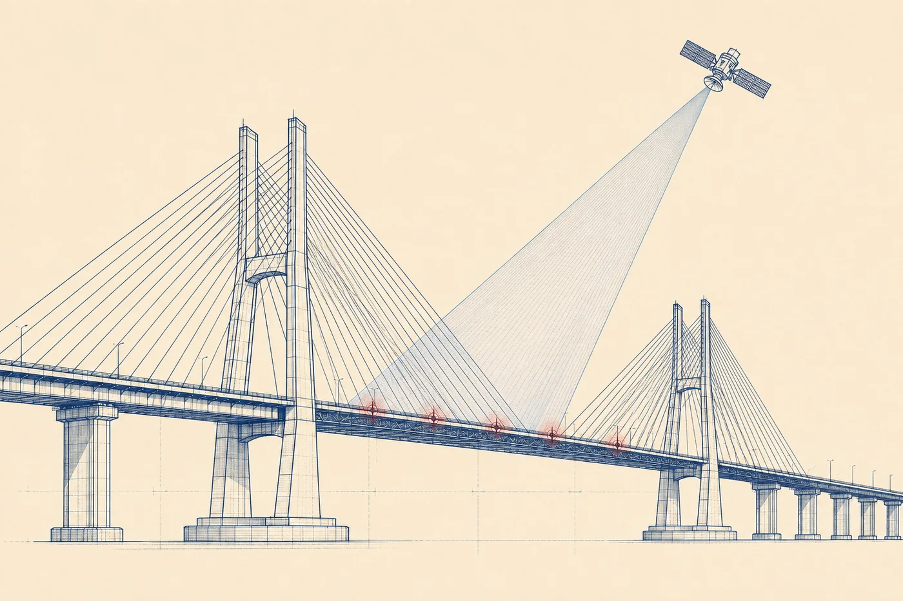
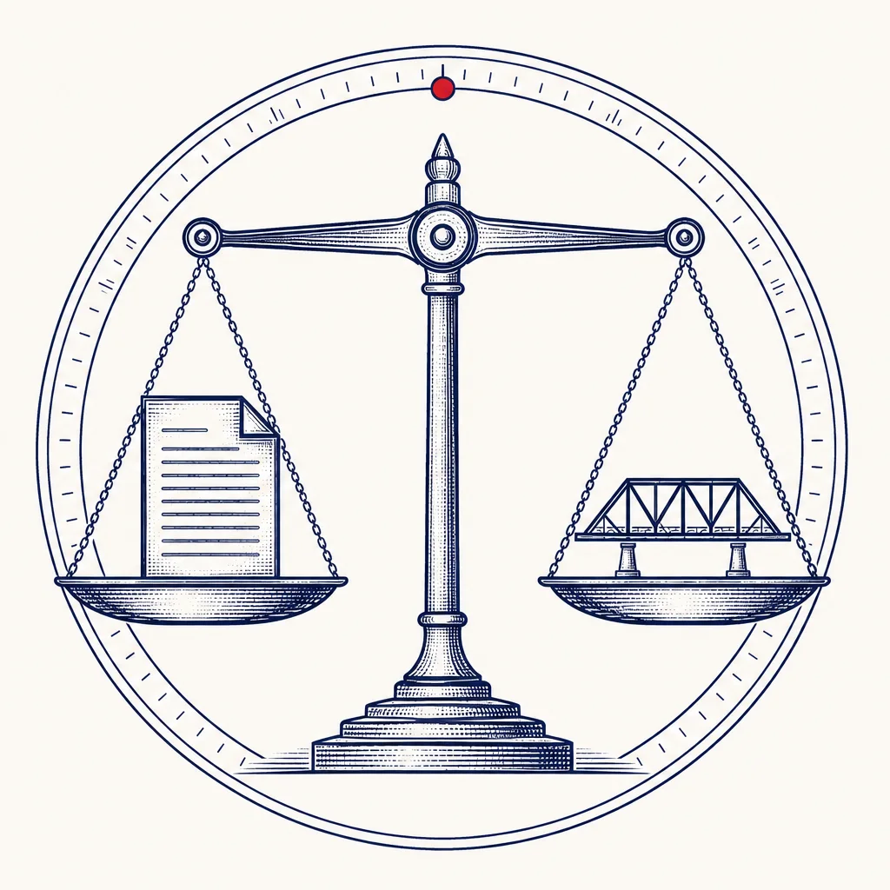

01
The Dissent Docket
Every open structure in the federal inventory, plotted live. Color is the docket band; click a marker for its dossier. Basemap: OpenStreetMap contributors, CARTO.
AI INNOVATION CHALLENGE 2026 | ROUND 3 : AI EVOLUTION | TEAM NEXUS NETWORK, DEPT. OF CSE (CYBER SECURITY)
A physics-only model re-inspects all 965 open structures in the state inventory from open federal records, real weather histories and traffic loads, and files a dissent wherever the official inspection record stops agreeing with the physical evidence. Trained on data through 2015 only; everything after is a held-out test.

Every open structure in the federal inventory, plotted live. Color is the docket band; click a marker for its dossier. Basemap: OpenStreetMap contributors, CARTO.

DISSENT IS THE MACHINE THAT FILES THE DISSENT | BUILT IN ONE DAY ON REAL FEDERAL DATA | ZERO INSTALLED HARDWARE